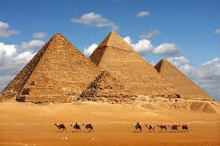
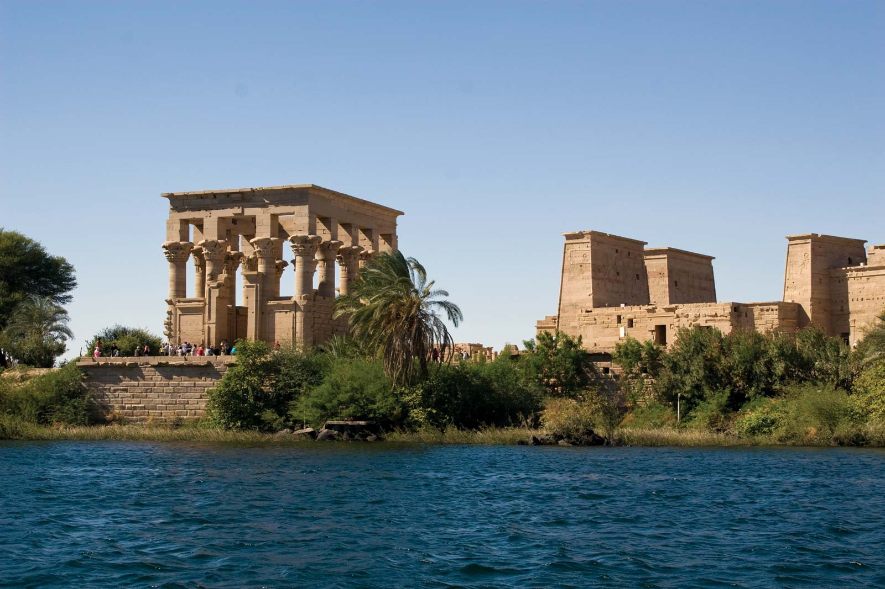

Cairo, Egypt’s sprawling capital, is set on the Nile River. At its heart is Tahrir Square and the vast Egyptian Museum, a trove of antiquities including royal mummies and gilded King Tutankhamun artifacts. Nearby, Giza is the site of the iconic pyramids and Great Sphinx, dating to the 26th century BC. In Gezira Island’s leafy Zamalek district, 187m Cairo Tower affords panoramic city views.

Egyptian pyramids
The Egyptian pyramids are ancient pyramid-shaped masonry structures located in Egypt. As of November 2008, sources cite either 118 or 138 as the number of identified Egyptian pyramids. Most were built as tombs for the country's pharaohs and their consorts during the Old and Middle Kingdom periods.

Nile River
The Nile, a north-flowing river in Africa, is among the world’s longest waterways, famed for its ancient history and the archaeological sites along its shores. The fertile Lower Nile gave rise to early Egyptian civilization and is still home to the Great Pyramids and Sphinx of Giza near Cairo. Sightseeing boats, from luxury liners to traditional felucca sailboats, also cruise between the cities of Luxor and Aswan.